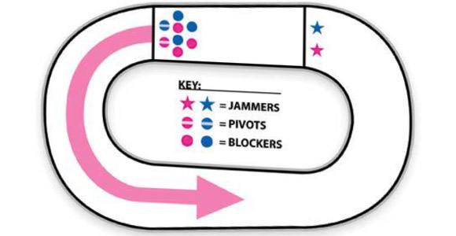

| Начало • Futsal • Speedcubing • Parkour• Teqball • Highdiving • Paintball • Sepak Takraw • Roller Derby • Kiteboarding |
| Roller Derby | |
|
|
|
|
Правила на играта Roller derby се играе в два периода от по 30 минути. Два отбора от до 15 играчи, всеки от които включва до петима членове за епизоди, наречени „задръствания“. Задръстванията продължават две минути, освен ако не бъдат отменени преждевременно. Всеки отбор определя играч, който отбелязва гол („заглушителя“); останалите четири члена са "блокери". Един блокер може да бъде определен като „пивот“—блокер, на когото е позволено да стане заглушител в хода на играта. Следващият засечка може да включва различни играчи от 15-те играчи в списъка и различни селекции за заглушител и шарнирен болт. |
 |
| Видеа | |